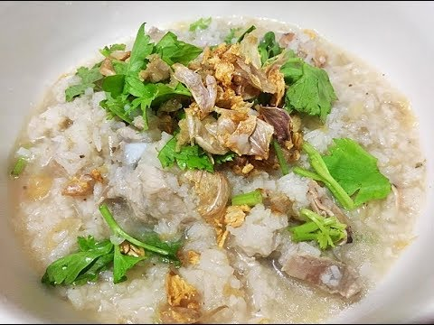

ข้าวต้ม

ส่วนผสม
- ข้าวสวย(ข้าวเย็น) 2 ถ้วย
- น้ำเปล่า(สำหรับต้มข้าว) ให้ท่วมข้าวที่ต้ม
- ส่วมผสมน้ำซุป
- น้ำเปล่า 1 ลิตร
- คนอร์ซุปก้อนหมู 2 ก้อน
- หมูสับ 200 กรัม
- รากผักชี+กระเทียม+พริกไทย 2 ช้อนชา
- น้ำปลา 1 ช้อนโต๊ะ
- กระเทียมเจียว ตามชอบ
- ต้นหอมซอย+ผักชีซอย อย่างละ 1 ต้น
- พริกไทยป่น ตามชอบ
- พริกน้ำส้ม ตามชอบ
วิธีทำ
- นำข้าวสวยใส่หม้อ เติมน่้าเปล่าพอท่วมข้าวต้มให้ข้าวนิ่ม
- ตำรากผักชี+กระเทียม+พริกไทยให้ละเอียด
- ใส่หมูสับลงคลุกเคล้าให้เข้ากันปรุงรสด้วยน้ำปลา1ช้อนโต๊ะ
- นำน้าเปล่าใส่หม้อตั้งไฟใส่คนอร์ซุปก้อนหมูลงต้มให้ละลาย
- นำหมูสับมาปั้นเป็นก้อนขนาดเท่าๆกันใส่ลงในหม้อน้ำซุปต้มจนหมูสุกหมั่นช้อนฟองออก
- ตักข้าวต้มที่ใส่ถ้วยที่จะรับประทาน
- ตักน้ำซุปกับหมูสับใส่ลงในถ้วยข้าว
- โรยพริกไทยป่นกับต้นหอมซอย+ผักชีซอย
- โรยกระเทียมเจียว
- จัดเสิร์ฟกับพริกน้ำส้ม
คุณค่าทางโภชนาการ
| Nutrition Facts |
| Serving:4 |
|
| Amount per serving |
| Calories |
101 |
|
%Daily Vale |
| Total Fat 3.6g |
5% |
| Saturated Fat 0.5g |
3% |